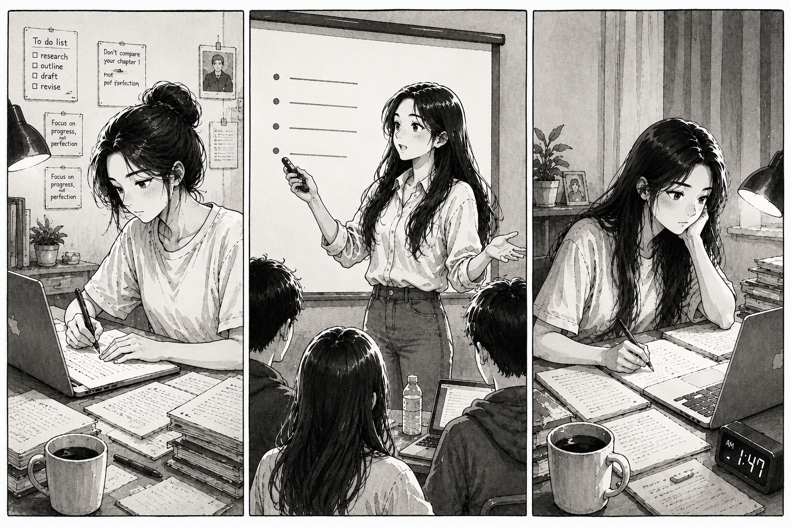
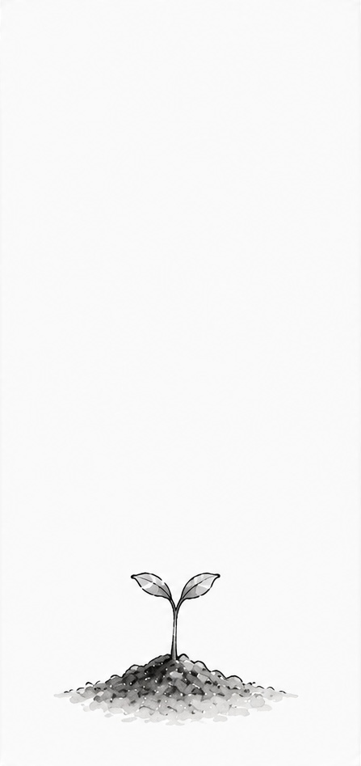
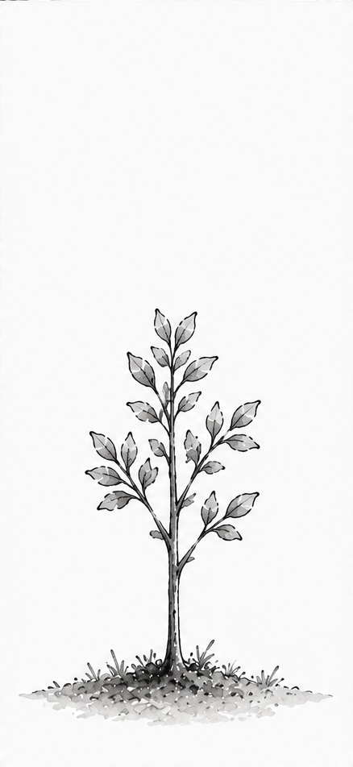
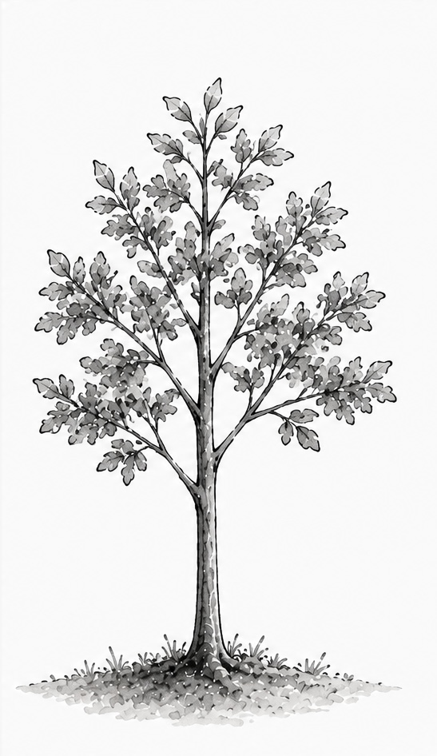
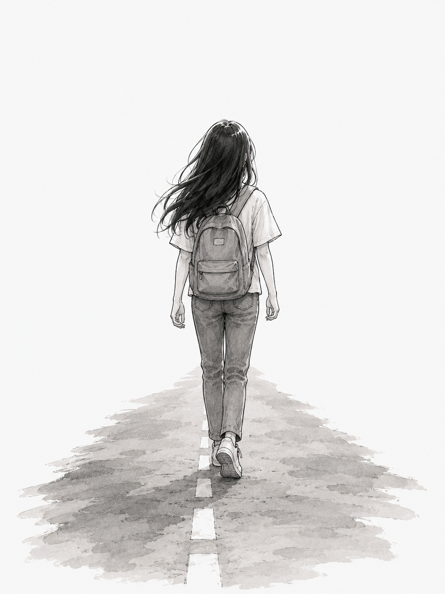

Chapter 4
Towards Tomorrow
After experiencing a wide range of emotions—from curiosity and excitement to confusion and pressure, and finally to acceptance, adaptation, and growth I became more confident, more open-minded, and more accepting of who I am. Even though I am still walking the path I chose for myself, I now move forward with greater confidence and a stronger sense of purpose.
As things gradually fell into place, I began to look ahead with hope and confidence.
I am still working hard and pushing myself every day so that I can turn that dream into reality.

The place that once felt unfamiliar slowly became somewhere I could truly call home. It became the place where I pursued my dreams, ambitions, and hopes for the future.
I see myself in this tree. From a small young sprout, it has grown steadily over time, and so have I. Although I have come a long way, I am still growing and becoming a better version of myself.


Like this towering tree, I believe that with time, patience, and perseverance, I too will grow into the person I aspire to be.

My journey is far from over. The road ahead may be long, but I am ready to keep moving forward, one step at a time ...
